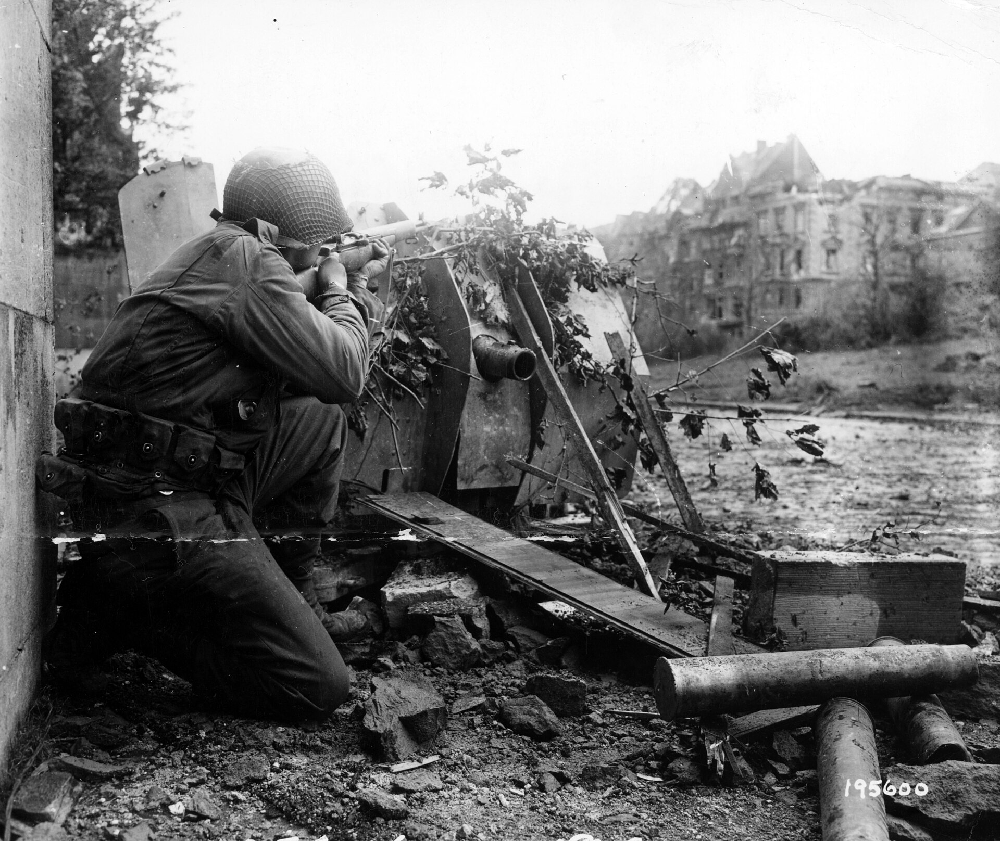
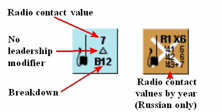
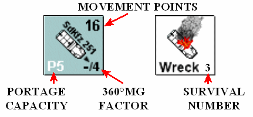
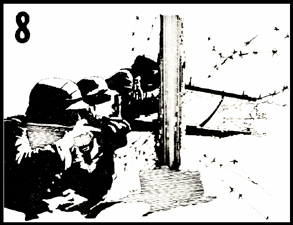
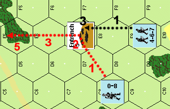
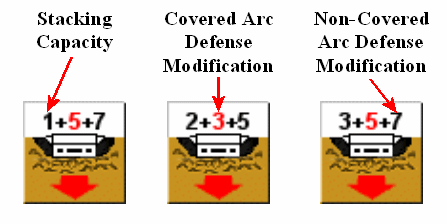
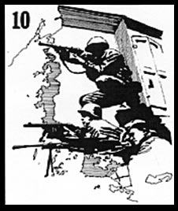
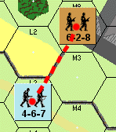
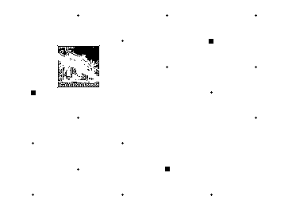
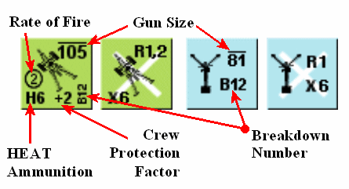

Terreno y reglas avanzadas (reglas 44–63)¶

44. TIPOS DE TERRENO RURAL¶
►44.1 [véase 142.211] ACANTILADOS: Los lados de hex de colina teñidos de negro son acantilados infranqueables. Ninguna unidad puede moverse a través de tal lado de hex. El procedimiento de fuego a través de un lado de hex de acantilado es idéntico al de cualquier línea de cresta, salvo que las unidades disparadora y objetivo sean hexes adyacentes, en cuyo caso el Fuego a Quemarropa (Point Blank) de la(s) unidad(es) superior(es) se triplica. El fuego de la(s) unidad(es) inferior(es) seguiría duplicado como Fuego a Quemarropa normal. Un ejemplo de lado de hex de acantilado es 3D3–3C4.
►44.2 TRIGALES (WHEATFIELDS): Los hexes de color amarillento o beige son trigales. El movimiento a través de un trigal es idéntico al movimiento en terreno abierto. Un ejemplo de trigal es el hex 3AA10.
►44.21 Los trigales son un obstáculo a la vista pero no al fuego. Las unidades pueden ver hacia un hex de trigal pero no a través de él, salvo que tengan una ventaja de altura, en cuyo caso los trigales no obstruyen la LDV de ningún modo. Por tanto, las unidades en el mismo nivel que el trigal podrían disparar normalmente a un hex de trigal, pero el fuego penetrante a través de más de un lado de hex de trigal se calcula a mitad de potencia como Fuego de Área.
44.22 Salvo otros obstáculos de LDV, los vehículos en un trigal o detrás de él son siempre visibles, independientemente de la elevación del observador.
►44.23 Las unidades que se mueven a través de un trigal no están sujetas al modificador a la tirada de -2 al fuego defensivo, independientemente de la elevación del disparador.
44.24 Los trigales están sujetos a variación estacional y existen solo en aquellos escenarios que transcurren durante el periodo de junio a octubre. Los hexes de trigal "fuera de temporada" se tratan como terreno abierto.
44.3 CRÁTERES (SHELLHOLES): Las manchas marrones con un núcleo marrón oscuro son fácilmente identificables como cráteres. Los cráteres no tienen efecto especial sobre el movimiento de infantería ni la LDV, pero sí afectan al combate y al movimiento de vehículos. Un ejemplo de cráter es 3Y3. No pueden crearse cráteres adicionales durante el transcurso de una partida. Los representados en el mapa son resultado de un bombardeo prolongado.
44.31 Si la unidad objetivo de infantería está en un cráter, suma 1 a la tirada del atacante.
44.32 Si se dispara contra el objetivo de infantería mientras se mueve (Fase de Fuego Defensivo) a través de un hex de cráter, se aplicaría el modificador a la tirada normal de -2, pero se ajusta a una modificación total de -1 debido a la cobertura que ofrece el cráter.
45. ARTILLERÍA FUERA DEL MAPA¶
La presencia o ausencia de artillería fuera del mapa pretende ser el «gran igualador» en SQUAD LEADER, igual que a menudo lo fue en el campo de batalla. Todos los escenarios incluyen la variante «Opcional, previo acuerdo de ambos jugadores». Si alguno de los jugadores considera que los escenarios provistos están desequilibrados, es libre de elegir el tipo y el número de Fuegos de Eficacia (Fire Missions) de artillería que añadir al bando más débil. Resuelta así la cuestión del equilibrio de la partida, su oponente puede entonces elegir bando. Otras compensaciones, como el Movimiento por Alcantarillas (27) o el Fanatismo (26), pueden negociarse entre los jugadores, pero los distintos grados de apoyo de artillería serán con toda probabilidad la moneda de cambio habitual.
45.1 La artillería fuera del mapa suele introducirse aleatoriamente en un escenario para reflejar mejor la incertidumbre del jefe de pelotón, que rara vez estaba «al tanto» de cuánta artillería —o de qué tipo— podía destinarse a su sector del frente. El proceso de selección aleatoria de artillería se denomina módulo de artillería. Se concede un módulo de artillería a cada bando por cada ficha de radio que figure en su orden de batalla, salvo que se especifique otra cosa.
45.2 El jugador (o jugadores) que recibe el módulo de artillería tira un dado por cada ficha de radio en la siguiente tabla para determinar el tipo de artillería disponible.
45.21 [RE: COD 107.42 ACCESO A LA BATERÍA:] Una vez seleccionado el calibre de su apoyo de artillería, complete el módulo determinando el número de Fuegos de Eficacia (Fire Missions) que puede recibir de ese apoyo. Invierta y mezcle las fichas de "chit" numeradas del 1 al 4 y robe en secreto una ficha. El número obtenido es el número máximo de fichas FFE (46.4) que puede colocar. Aparte esa ficha por separado para poder verificar el uso de sus Fuegos de Eficacia cuando termine el escenario. Cada vez que se resuelve un ataque FFE se considera un Fuego de Eficacia (Fire Mission).
45.3 Siempre que se añadan capacidades de artillería a un escenario por acuerdo de ambos jugadores, debe añadirse una ficha de radio al orden de batalla de ese bando por cada módulo puesto a disposición.
45.4 Si ambos bandos disponen de capacidad de artillería fuera del mapa, uno o ambos pueden querer entablar "Fuego de Contrabatería" para silenciar la artillería fuera del mapa contraria. Para entablar Fuego de Contrabatería, su artillería debe ser de calibre igual o superior al de la artillería fuera del mapa contraria (todos los calibres de artillería se redondean a la baja al múltiplo de 10 más próximo: Ejemplo: los obuses estadounidenses de 105 mm se redondearían a 100). El Fuego de Contrabatería cuenta como un Fuego de Eficacia (Fire Mission) y puede ejecutarse en cualquier Fase de Fuego Preparado, siempre que se haya mantenido el contacto por radio (46.1) en la Fase de Reorganización precedente y que la artillería contraria ya haya disparado al menos una vez durante el escenario.
45.41 El propietario de la artillería desorganizada (disrupted) debe tirar inmediatamente un dado. El resultado de esa tirada es el número de turnos de juego que deben transcurrir antes de que la artillería pueda intentar disparar de nuevo. La artillería desorganizada pierde el contacto por radio y no puede intentar restablecerlo hasta el turno en que vuelva a quedar libre para disparar.
45.42 Un jugador que entable Fuego de Contrabatería puede restar 1 a la tirada de dados por cada turno consecutivo de Fuego de Contrabatería solicitado por el mismo líder. Por tanto, si el mismo líder solicitara su tercer Fuego de Contrabatería consecutivo, podría restar 2 a la tirada. Cada turno de Fuego de Contrabatería constituye un Fuego de Eficacia (Fire Mission).
46. MECÁNICA DEL FUEGO DE ARTILLERÍA¶
►46.1 La artillería no puede usarse a menos que el jugador propietario haya establecido y mantenido comunicación por radio con las baterías de apoyo. Solo los líderes no desmoralizados que estén en el mismo hex con una ficha de radio operativa pueden intentar establecer o mantener el contacto por radio. Cada líder con uso exclusivo de una radio puede solicitar solo un Fuego de Eficacia (Fire Mission) por turno de jugador, independientemente del número de Fuegos de Eficacia o de Módulos de Artillería que posea su bando. El manejo de una radio y el consiguiente reglaje de artillería no alteran la capacidad de dirección de fuego ni de movimiento del líder.
46.11 Cualquiera de los jugadores solo puede intentar el Contacto por Radio durante la Fase de Reorganización. Para establecer contacto por radio, los líderes deben sacar un valor igual o inferior al valor de contacto por radio correspondiente a su nacionalidad y época.
46.12 Una vez establecido, el contacto por radio debe mantenerse en las sucesivas Fases de Reorganización. Para mantener el contacto por radio, vuelva a tirar en la Tabla de Valores de Contacto por Radio, pero reste 2 a la tirada de dados. Si no logra mantener el contacto, el siguiente intento de radio será para establecer contacto y, como tal, no estará sujeto a la modificación favorable de la tirada.
46.13 Una vez establecido con éxito el contacto por radio, finalice la Fase de Reorganización colocando una ficha de "Solicitud de Artillería" (Artillery Request) en un hex situado en la LDV de su líder que desee que sea el centro de la descarga. Esto pone fin a la preparación de artillería hasta la siguiente Fase de Combate Cuerpo a Cuerpo.
46.2 Durante la Fase de Combate Cuerpo a Cuerpo inicial posterior al contacto por radio, cualquiera de los jugadores puede sustituir su ficha de Solicitud de Artillería (dándole la vuelta) por una ficha azul de "Disparo de Reglaje" (Spotting Round, SR) y tirar los dados para determinar la ubicación del disparo de reglaje inicial de la siguiente manera:
46.21 Tire un dado para determinar la precisión del disparo inicial. Si la tirada es un "1" o un "2" para artillería alemana o estadounidense, el SR cae sobre el objetivo. La artillería rusa debe sacar un "1" para caer sobre el objetivo. Si el Disparo de Reglaje no cae sobre el objetivo, proceda a 46.22 para determinar el hex en el que cae el SR.
46.22 Tire un dado y consulte el diagrama "Dirección del Error" (Direction of Error). La tirada de dados equivale a la dirección, respecto al hex previsto, en la que caerá el disparo de reglaje.
46.23 Hallada así la dirección del error, vuelva a tirar un dado para determinar la magnitud del error. El resultado es el número de hexes de distancia respecto al hex previsto, en la dirección errónea, en el que cae el Disparo de Reglaje inicial. Si cae dentro de la LDV del líder solicitante, recoja la ficha azul de Disparo de Reglaje y sustitúyala por un Disparo de Reglaje rojo en el hex correspondiente. Esto pone fin a la preparación de artillería hasta la siguiente Fase de Reorganización.
Ejemplo: Una batería de morteros alemana acaba de hacer caer un disparo de reglaje inicial tras sacar un "4" de precisión, un "2" de dirección y un "3" de distancia.
46.24 Si un error de reglaje hace que el disparo de reglaje inicial salga del tablero de juego, o el disparo cae en un hex fuera de la LDV del líder solicitante, el disparo se pierde y el jugador propietario debe esperar hasta la siguiente Fase de Combate Cuerpo a Cuerpo para situar un Disparo de Reglaje inicial. Dé la vuelta a la ficha azul de Disparo de Reglaje, dejándola en su cara de Solicitud de Artillería.
46.25 Un disparo de reglaje no tiene absolutamente ningún efecto dañino sobre ninguna unidad del hex en el que cae.
46.3 En la primera Fase de Reorganización y en todas las sucesivas tras la colocación del disparo de reglaje inicial, cualquiera de los jugadores (siempre que mantenga su contacto por radio) puede realizar 1 de 4 operaciones:
46.31 Puede corregir abiertamente su artillería hasta 3 hexes en la dirección o direcciones que elija, moviendo su disparo de reglaje rojo 3 hexes de cualquier forma; O
46.32 Puede dejar su disparo de reglaje rojo donde está o moverlo hasta 3 hexes; y sustituirlo (dándole la vuelta) por una ficha de "Fuego de Eficacia" (FFE); O
46.33 Puede mover una ficha FFE ya colocada hasta 3 hexes en la dirección o direcciones que elija, o sustituirla por un disparo de reglaje rojo y moverlo hasta 3 hexes; O
46.34 Puede retirar su disparo de reglaje o FFE y colocar otra ficha de Solicitud de Artillería en cualquier hex de su LDV.
46.4 Una ficha FFE, una vez colocada, debe dar como resultado que la artillería representada caiga con pleno efecto en:
- La Fase de Fuego Preparado (si es su turno de jugador), O
- La Fase de Fuego Defensivo (si es el turno de jugador de su oponente).
►46.5 En la fase correspondiente designada en 46.4, la artillería cae con igual efecto en el hex de FFE y en sus seis hexes adyacentes. Esta "Zona de Estallido" (Blast Area) de 7 hexes es golpeada con el equivalente HE en la Tabla de Fuego de Infantería. Así pues, si se tratara de una descarga de un obús de 105 mm, se consultaría la columna 16/100 de la Tabla de Fuego de Infantería y se tiraría individualmente por cada hex de la zona de estallido como si estuvieran siendo sometidos a fuego de infantería. Se aplican todas las modificaciones a la tirada de dados por Efectos del Terreno, incluidas las de muros y setos si el lado de hex de muro o seto se encuentra entre la unidad y cualquier hex de la zona de estallido.
46.51 El fuego de artillería durante la Fase de Fuego Defensivo afecta no solo a las unidades que se encuentran en la Zona de Estallido en el momento del fuego, sino también a todas las unidades que se movieron a través de la Zona de Estallido durante la Fase de Movimiento inmediatamente anterior. Tales unidades se "retrotraen" al primer hex de la Zona de Estallido en el que entraron en la Fase de Movimiento precedente (véase 16; Fuego Defensivo). Si la unidad en movimiento sobrevive, puede volver a recorrer su movimiento anterior hasta el hex que ocupaba antes del Fuego Defensivo. No obstante, si ese movimiento la lleva a través de otro hex de la Zona de Estallido, sufriría fuego de artillería de nuevo en ese hex.
46.52 El fuego de artillería sobre unidades que se mueven a través de un hex de terreno abierto dentro de la Zona de Estallido estaría sujeto al habitual modificador de -2 a la tirada de dados por moverse al descubierto.
46.53 Cualquier arma de apoyo en el hex objetivo también queda eliminada por un resultado "KIA" de cualquier fuego de artillería sobre el hex de esa unidad. Las armas de apoyo solas en un hex de la Zona de Estallido también deben tirarse en la Tabla de Fuego de Infantería.
►46.54 Los vehículos en la Zona de Estallido solo se ven afectados por resultados "KIA" en la Tabla de Fuego de Infantería. Utilice los modificadores a la tirada de dados de Descarga de Artillería contra Vehículos (Artillery Barrage vs. Vehicles) al calcular los ataques de artillería contra un vehículo. Los vehículos no están sujetos al modificador de -2 a la tirada de dados por moverse al descubierto frente a una descarga de artillería, pero los pasajeros sí reciben el perjuicio de -2, salvo que vayan en un semioruga. Aunque los resultados de Chequeo de Moral en la Tabla de Fuego de Infantería no afectan a los vehículos, sí afectan a todos los pasajeros excepto a los que van en semiorugas. Los pasajeros de semiorugas solo se ven afectados por la destrucción del vehículo. Los ataques contra pasajeros que no van en semiorugas utilizan la misma tirada de dados aplicada contra su vehículo, pero modificada únicamente por el modificador de -2 de "moverse al descubierto" mencionado anteriormente.
46.6 No tienen lugar acciones de artillería distintas de las citadas en 46.2 durante las demás fases de Combate Cuerpo a Cuerpo. Tirar para determinar la ubicación del disparo de reglaje inicial es la única operación de artillería en la Fase de Combate Cuerpo a Cuerpo.
►46.7 Los disparos de reglaje (o fichas FFE) solo pueden solicitarse y corregirse si la unidad de líder con contacto por radio tiene una LDV despejada tanto al hex en el que se pretende que caiga el disparo de reglaje como al hex que ocupa actualmente (si ya está en el tablero). Los muros, setos, trigales o vehículos nunca bloquean la observación (LDV) de un disparo de reglaje o FFE por parte de un líder. El humo sí bloquea los intentos de observación dentro del hex de humo y a través de él.
46.71 Si se pierde el contacto por radio mientras hay una ficha FFE o un disparo de reglaje sobre el tablero, dichas fichas se retiran y todo el proceso se repite una vez restablecido el contacto por radio.
46.72 Si se han usado todos los Fuegos de Eficacia (fire missions) asignados, no pueden solicitarse más disparos de reglaje.
►46.8 Las radios se consideran un arma de apoyo a todos los efectos y pueden ser transportadas por cualquier escuadra con un coste de 1 punto de porte, o por un líder con un coste de 2 puntos de porte.
46.81 Las radios están sujetas a avería y reparación de la misma manera que las demás Armas de Apoyo. Una tirada de dados sin ajustar de "12" avería cualquier ficha de radio.
►46.82 Si se eliminan una o más radios, cualquier otra radio amiga del escenario puede usar el resto del módulo de artillería de la radio eliminada. No obstante, solo puede ejecutarse un Fuego de Eficacia (Fire Mission) por módulo de artillería y por radio en el mismo turno de jugador.
►46.9 La artillería puede usarse para colocar humo en lugar del fuego estándar de Alto Explosivo (HE) de un FFE. Basta con colocar una ficha de humo en cada hex de la Zona de Estallido. Como ocurre con toda colocación de humo, debe hacerse al comienzo mismo de la fase de fuego, antes de que disparen otras unidades. El humo tiene el mismo efecto que el descrito anteriormente en la sección 24, y se retira al comienzo de la siguiente Fase de Fuego Preparado de su propietario. Colocar humo cuenta como un Fuego de Eficacia (fire mission).
45.2 Tabla de selección de artillería del módulo¶
Verifica los valores con tus cartas/tablas originales.
| Tirada de dados | Alemán | Ruso | Estadounidense |
|---|---|---|---|
| 1 | 80+mm | 70+mm | 80+mm |
| 2 | 80+mm | 80+mm | 80+mm |
| 3 | 80+mm | 80+mm | 100+mm |
| 4 | 100+mm | 120+mm | 100+mm |
| 5 | 120+mm | 120+mm | 150+mm |
| 6 | 150+mm | 150+mm | 150+mm |
Nota (texto original): para facilitar la consulta hemos listado los «tamaños» tal como se refieren en la Tabla de Fuego de Infantería. Para ser más precisos, las cifras «redondeadas» se refieren al mortero alemán de 81 mm, el obús ruso de 152 mm, los 105 estadounidenses, etc.
45.4 Tabla de fuego de contrabatería¶
Verifica los valores con tus cartas/tablas originales.
| Tirada de dados | Resultado |
|---|---|
| 2 | Artillería enemiga destruida |
| 3-5 | Artillería enemiga interrumpida |
| 6-12 | Sin efecto |

Detalle de una ficha de radio indicando dónde se leen sus valores. - Radio contact value = Valor de contacto por radio (valor «7») - No leadership modifier = Sin modificador de liderazgo (símbolo △) - Breakdown = Avería (valor «B12») - Radio contact values by year (Russian only) = Valores de contacto por radio por año (solo soviéticos): ficha «R1 X6» con valores 41:7 / 42:6 / 43+:5 (?)
46.11 Tabla de valores de contacto por radio¶
Verifica los valores con tus cartas/tablas originales.
| Nacionalidad | Periodo | Número requerido |
|---|---|---|
| Alemán | Todos los escenarios | 7 |
| Estadounidense | Todos los escenarios | 9 |
| Ruso | Escenarios de 1941 | 5 |
| Ruso | Escenarios de 1942 | 6 |
| Ruso | Escenarios de 1943-45 | 7 |

Fichas de artillería (secuencia de fuego de artillería sobre el mapa): - Artillery Request (AR) = Solicitud de Artillería (ficha «AR») - Spotting Round = Disparo de reglaje (SR) - Fire for Effect (FFE) = Fuego de Eficacia (FFE) Cada hexágono muestra los números de orientación 1–6 en sus lados.


ZONA DE EXPLOSIÓN
46.54 Modificadores de VBC frente a ataques de Fuego de Eficacia (FFE)¶
Verifica los valores con tus cartas/tablas originales.
| Vehículo | Modificador |
|---|---|
| Vehículos no blindados | −3 |
| VBC de techo abierto | −1 |
| Carro/tanque | +1 |
| Cañón autopropulsado (CAP) | +2 |
47. SEMIORUGAS¶
47.1 Las disposiciones de 31.1-31.4 relativas al transporte de infantería con carros y cañones autopropulsados (CAP) también se aplican a los semiorugas, al igual que las disposiciones de 32.3-32.7 relativas al uso de vehículos blindados de combate (VBC) como cobertura.
47.2 En el juego se incluyen fichas de semioruga tanto con armamento de ametralladora (MG) como sin él. Los jugadores deben prestar especial atención a los escenarios para ver si el escenario especifica armamento de MG para alguno de los semiorugas listados. Siempre que se destruya un semioruga armado, existe la posibilidad de que la dotación escape. Invierte la ficha y tira dos dados. Una tirada igual o inferior al Número de Supervivencia impreso en la carcasa (Wreck) resulta en la supervivencia de la dotación (ver 33.9).
47.3 Los semiorugas desarmados tienen una dotación inseparable e inherente de conductor y conductor auxiliar que comparten el destino del semioruga. Si es eliminado, todos los conductores inherentes, los pasajeros y las armas de apoyo no montadas que se encuentren en el vehículo también son eliminados.
47.4 La infantería transportada también puede disparar su potencia de fuego (PF) inherente y las LMG transportadas desde el semioruga sin penalización, pero no se puede disparar ninguna otra arma de apoyo desde un semioruga. Los líderes transportados pueden dirigir el fuego de la MG del semioruga así como cualquier fuego de la infantería que vaya en el semioruga, pero solo pueden dirigir un ataque de fuego por turno de jugador.
47.5 Si el semioruga se mueve, todo el fuego procedente del semioruga durante el turno de jugador de su propietario se reduce a la mitad según las disposiciones del Fuego en Movimiento. Si el semioruga o cualquiera de sus pasajeros dispara durante la Fase de Fuego Preparado, no podrá moverse durante la Fase de Movimiento siguiente.
47.6 Los pasajeros de un semioruga son inmunes al fuego normal de infantería y de LMG. Las MMG y HMG dentro de su alcance normal impactan automáticamente a los semiorugas, pero no dañan a los pasajeros a menos que se obtenga una destrucción contra el semioruga en la Tabla de Destrucción de VBC (AFV Kill Table).
►47.7 La infantería que dispara sus propias armas desde un semioruga pierde la inmunidad al fuego de infantería descrita en 47.6 durante la fase de fuego enemigo opuesto siguiente, pero aún recibiría un modificador a la tirada (MTD) de +2 a todo el fuego de infantería y de MG dirigido contra ella debido a la naturaleza de muro del blindaje del semioruga. Cualquier MMG o HMG que dispare a un semioruga que transporte infantería expuesta debe declarar primero si está disparando a la infantería con la Tabla de Fuego de Infantería (TFI) o al propio semioruga con la Tabla de Destrucción de VBC.
►47.8 Si el fuego se dirige contra los pasajeros del semioruga desde un hex adyacente de mayor altura, el semioruga no protege a la infantería que viaja en él según lo descrito anteriormente en 47.6 y 47.7.
47.9 La infantería que se desmoraliza mientras es transportada puede optar por permanecer en el semioruga durante la Fase de Huida, ya que estar en un semioruga se considera cobertura. Sin embargo, el semioruga no podría avanzar hacia el enemigo hasta que la infantería desmoralizada se reorganice o abandone el vehículo. La infantería desmoralizada dentro de un semioruga tendría que tirar Moral de Desesperación para reorganizarse si se ha disparado al semioruga de cualquier manera desde la Fase de Reorganización anterior, incluso si dicho fuego es ineficaz contra un semioruga (47.6).
48. CAÑONES ANTITANQUE¶
Los cañones antitanque (en adelante denominados cañones AT) se tratan como cañones autopropulsados (CAP) semiinmóviles.
La Cadencia de Fuego (Rate of Fire) indica el número de veces que el cañón puede disparar (atacar) en una fase de fuego. Independientemente de la cadencia de fuego, solo puede disparar en una fase de fuego por turno de jugador.
El Tipo de Cañón (Gun Type) indica el calibre del cañón para su uso tanto en la Tabla de Destrucción de VBC como en la Tabla de Fuego de Infantería (TFI). El Factor de Protección de la Dotación (Crew Protection Factor) representa la protección de la dotación del cañón ofrecida por el escudo del cañón contra el fuego de alto explosivo y de tipo infantería. El Factor de Protección de la Dotación se añade a la tirada de cualquier ataque contra la dotación del cañón que cruce el Arco Cubierto (Covered Arc) del cañón.
►48.1 Los cañones antitanque se destruyen automáticamente si reciben el impacto de un proyectil de 37 mm o mayor. Un impacto de menos de 37 mm no afectaría al cañón, pero podría afectar a la dotación. Las armas especiales (bazuca, lanzallamas) afectan al cañón AT como si fuera un semioruga en la Tabla de Destrucción de VBC. El fuego normal de infantería no tiene ningún efecto sobre un cañón AT.
48.2 La dotación del cañón solo se ve afectada por el fuego resuelto en la Tabla de Fuego de Infantería (TFI). La misma tirada utilizada para obtener el impacto sobre el cañón en la TABLA DE IMPACTO (TO HIT TABLE) se modifica con +2 (suponiendo que el disparo cruzó el Arco Cubierto) en la Tabla de Fuego de Infantería para determinar el efecto sobre la dotación. Los impactos de munición perforante (AP) sobre el cañón no afectan a la dotación de ninguna manera. Todas las unidades que disparen a cañones AT en la TABLA DE IMPACTO (33.3) deben usar la fila "AT Gun" de dicha tabla.
No hay modificador de terreno a la tirada de IMPACTO ("TO HIT") contra un cañón AT, independientemente del terreno. Se asume que todos los cañones AT/obuses tienen un emplazamiento protector estándar, indicado por la fila "AT Gun" en la tabla de IMPACTO. Si hay otras unidades en el mismo hex que el cañón AT, la misma tirada utilizada para atacar al cañón AT se modifica según cualquier efecto que pudiera tener sobre las otras unidades del hex.
Ejemplo: Supongamos que un cañón AT, su dotación y una escuadra ocupan un edificio de piedra. Un carro MKIVF2 dispara a un alcance de 6 hexes y obtiene un "7". El carro falló contra el cañón AT (necesitaba un 6), pero impactó a la infantería (necesitaba un 8). El carro vuelve a tirar en la columna del 8 (75 mm) de la Tabla de Fuego de Infantería y obtiene un "4". Esta tirada se ajusta a un "7" para la escuadra de infantería (+3 edificio de piedra) y a un "9" para la dotación (+3 edificio, +2 escudo del cañón AT). La escuadra de infantería debe pasar un Chequeo de Moral de "1"; la dotación no se ve afectada.
48.3 Un cañón AT puede encasquillarse y repararse del mismo modo que una MG, salvo que debe estar presente una ficha de dotación no desmoralizada para completar la reparación.
►48.4 Un cañón AT puede ser empujado durante la Fase de Movimiento un hex en cualquier dirección por una ficha de escuadra o de dotación, siempre que no disparen durante ese turno de jugador ni realicen ningún otro movimiento (aparte de desembarcar del vehículo que remolca el cañón AT) durante la Fase de Movimiento. El cañón no puede ser empujado hacia un hex de colina de mayor altura que la que ocupa actualmente, pero puede ser arrastrado manualmente sobre muros, setos y hacia el interior de edificios y bosques. Un cañón AT puede colocarse en cualquier hex excepto en la planta superior (57.6) de un edificio de varias plantas.
48.5 Una ficha de dotación puede "girar" (pivotar) un cañón AT hasta 3 lados de hex dentro del mismo hex durante la Fase de Movimiento, pero si disparó durante ese turno de jugador (Fase de Fuego de Avance) se trataría como un CAP que pivota y sufriría la modificación de +3 a su tirada en la Tabla de IMPACTO. La dotación también podría pivotar el cañón dentro del mismo hex durante la Fase de Fuego Defensivo, pero cualquier fuego durante esa fase sufriría la modificación de +4 a su tirada en la TABLA DE IMPACTO (33.31, Caso I).
►48.6 Un cañón AT puede ser remolcado por cualquier camión, jeep o semioruga. Ni el cañón ni el vehículo pueden disparar durante el turno de jugador en el que se está enganchando, moviendo o desenganchando. Todos los vehículos que remolcan un cañón AT deben pagar el doble de los costes de movimiento normales. Ningún vehículo puede remolcar un cañón sobre un muro o seto.
►48.61 Un vehículo puede cargar un cañón AT durante cualquier Fase de Movimiento moviéndose a un hex que contenga un cañón AT con al menos la mitad de sus puntos de movimiento (MP) restantes. La ficha del cañón AT se coloca entonces encima del vehículo para indicar que está siendo remolcado. No se permite más movimiento durante ese turno.
►48.62 Un vehículo puede descargar un cañón AT al comienzo de cualquier Fase de Movimiento, siempre que tenga todos sus MP de la fase disponibles. A continuación, debe salir del hex que contiene el cañón AT (a menos que el propio cañón AT sea empujado a un hex adyacente por la escuadra o dotación acompañante; 48.4) y puede continuar moviéndose hasta haber gastado la mitad de sus MP de ese turno.
►48.63 Un cañón AT solo puede engancharse o desengancharse si hay presente una ficha de dotación o de escuadra no desmoralizada en el hex en el que tiene lugar la acción. La ficha de dotación o escuadra necesaria debe haber comenzado la Fase de Movimiento en el hex.
48.64 Un vehículo nunca puede ocupar el mismo hex que un cañón AT al final de una Fase de Movimiento, a menos que el cañón AT esté siendo remolcado por ese vehículo o haya sido arrollado (Overrun), en cuyo caso el cañón AT es eliminado. Un VBC que se mueve a través del hex del cañón AT (pero sin arrollarlo) no le causa ningún daño. Pero si el VBC termina su turno en el mismo hex, el cañón AT es abandonado por su dotación y queda sujeto a captura o eliminación.
48.7 Un cañón AT solo puede disparar dentro de su Arco Cubierto, pero puede atacar a tantos objetivos diferentes dentro de su Arco Cubierto como permita su cadencia de fuego. Los cañones AT, al igual que los VBC, no pueden moverse durante la Fase de Avance y, si disparan durante la Fase de Fuego Preparado, no pueden moverse durante el resto de ese turno de jugador (incluso si solo utilizaron parte de su cadencia de fuego).
48.8 Solo una ficha de dotación puede manejar un cañón AT.
48.81 Los cañones AT pueden ser capturados y utilizados únicamente por dotaciones enemigas.
48.82 Los modificadores de liderazgo no afectan al disparo de un cañón AT.
48.83 Los cañones AT pueden disparar alto explosivo (HE) contra objetivos de infantería.
►48.9 Un cañón AT cuenta como un arma de apoyo a efectos de apilamiento. Un cañón AT remolcado no cuenta contra los límites de apilamiento de un vehículo.
¡ALTO! Has leído todo lo necesario para jugar el Escenario 5. Te aconsejamos que lo juegues al menos una vez antes de avanzar a los escenarios más complicados y realistas que siguen.

PUNTOS DE MOVIMIENTO CAPACIDAD DE TRANSPORTE FACTOR DE AMETRALLADORA 360° NÚMERO DE SUPERVIVENCIA

TIPO DE CAÑÓN FACTOR DE PROTECCIÓN DE LA DOTACIÓN NÚMERO DE AVERÍA CADENCIA DE FUEGO
49. REGLAS NOCTURNAS¶
Las acciones nocturnas fueron comunes durante toda la Segunda Guerra Mundial. Saber aprovechar una luna brillante y la cobertura de nubes disponible se convirtió en un arma importante en la batalla por sobrevivir de cada LÍDER DE ESCUADRA (SQUAD LEADER).
►49.1 Durante los escenarios nocturnos, las unidades solo pueden disparar si el objetivo está tanto en la Línea de Visión (LDV) de la unidad que dispara como dentro del Alcance de Visibilidad Nocturna (Night Visibility Range) del tirador para ese turno de jugador (EXCEPCIONES: 49.2, 49.7).
49.11 El Alcance de Visibilidad Nocturna para todo el turno de juego se determina al final de la primera Fase de Reorganización de cada Turno de Juego tirando dos dados. El número resultante es el número inclusivo de hexes de distancia desde un observador a los que pueden verse las unidades en movimiento (salvo obstáculos a la LDV) durante el resto de ese turno de juego.
49.12 El Alcance de Visibilidad Nocturna obtenido en la tirada siempre se incrementa en 3 al intentar observar vehículos en movimiento.
Ejemplo: Si se saca un 7, entonces cualquier unidad de infantería en movimiento a 7 hexes o menos (cualquier vehículo en movimiento a 10 hexes o menos) de distancia de un observador sería vista, siempre que la LDV no estuviera bloqueada.
49.2 Las unidades que hayan disparado durante el mismo turno de jugador o el inmediatamente anterior pueden delatar su posición a las unidades enemigas con una LDV despejada mediante los fogonazos de sus armas. Dichas unidades quedan sujetas a fuego incluso si están más allá del Alcance de Visibilidad Nocturna de la unidad que dispara. Sin embargo, el fuego más allá del Alcance de Visibilidad Nocturna se reduce a la mitad como Fuego de Área (Area Fire).
►49.3 Las fichas de ocultación en los escenarios nocturnos no se retiran debido a la presencia de unidades enemigas adyacentes. Las fichas de ocultación permanecen en su sitio y en efecto incluso durante el primer turno de jugador de las situaciones de combate cuerpo a cuerpo (CCC) nocturno.
49.4 Durante los escenarios nocturnos, las fichas de "?" se retiran si una unidad bajo el "?" dispara o se mueve a un hex iluminado dentro de la LDV de una unidad enemiga no desmoralizada. El mero Movimiento durante los escenarios nocturnos no retira la ficha de ocultación. Incluso una pila entera de fichas de ocultación puede moverse, pero si recibe fuego efectivo de una unidad enemiga, o si se mueve a un hex iluminado dentro de la LDV de una unidad enemiga, todas las fichas de "?" implicadas se retiran permanentemente.
49.5 Las unidades "reales" siempre pueden "generar" otra ficha de ocultación al final de su turno de jugador, siempre que no se hayan movido, disparado, recibido fuego que provoque un Chequeo de Moral, ni hayan estado en combate cuerpo a cuerpo durante el turno de jugador que acaba de completarse. Dicha colocación no está limitada a hexes de bosque o de edificio, ni por la presencia de unidades enemigas adyacentes, como sí lo está durante los escenarios diurnos (25.3).
49.6 Al final de la Fase de Reorganización, si hay unidades enemigas dentro de la LDV y del Alcance de Visibilidad Nocturna de un líder no desmoralizado, ese líder puede colocar una bengala (starshell) a 5 hexes o menos de su propia posición. La ficha de bengala se retira tras la Fase de combate cuerpo a cuerpo siguiente. Disparar una bengala no tiene ningún efecto perjudicial sobre el fuego ni las capacidades de liderazgo del líder.
49.7 Una bengala ilumina toda el área del tablero de mapa dentro de 3 hexes de la ficha de bengala como si fuera un escenario diurno. Las unidades situadas fuera del área iluminada que tengan una LDV no bloqueada aún pueden disparar al interior del área iluminada sin penalización adicional.
49.8 A diferencia de los escenarios diurnos, las unidades en huida pueden cruzar terreno de campo abierto dentro de la LDV de unidades enemigas, a menos que el hex en cuestión esté iluminado por una bengala.
¡ALTO! Has leído todo lo necesario para jugar el Escenario 6. Te aconsejamos que lo juegues al menos una vez antes de avanzar a los escenarios más complicados y realistas que siguen.
CONJUNTO DE JUEGO III¶
Los Escenarios 7-12 tratan sobre el combate en el Frente Occidental. Se introducen muchas nuevas capacidades de escuadra, armas y fortificaciones en el orden de su aparición en los escenarios, lo que hace imprescindible que el lector proceda de forma ordenada y no pase directamente a los nuevos escenarios sin leer el texto pertinente.
50. LOS AMERICANOS¶
El combatiente americano era distinto, tanto táctica como psicológicamente, de su homólogo alemán o ruso. Se desmoralizaba bajo el fuego más rápido que cualquiera de los otros dos; pero también se reorganizaba más rápido. Además, su falta de sentido táctico a menudo le llevaba a intentar ataques extraños y con frecuencia imprudentes contra el enemigo. Le encantaban los artilugios mecánicos de cualquier tipo y sentía un cariño increíble por el equipo capturado. Las siguientes reglas se emplean para reflejar estos rasgos del GI.
50.1 Las escuadras americanas (no los líderes) no están sujetas a la Moral de Desesperación. Las escuadras americanas siempre se reorganizan con una tirada igual a su moral normal más cualquier modificador de liderazgo en efecto.
50.2 Solo las unidades de élite americanas (8-4-7) y los líderes con un modificador de liderazgo de -2 o -3 pueden manejar lanzallamas y colocar cargas de demolición (Demo Charges). Las unidades de élite americanas (8-4-7) pueden colocar humo de la misma manera que los Ingenieros de Asalto alemanes (24), solo si el escenario en juego les otorga esa capacidad.
50.3 Solo las unidades de dotación (Crew) pueden manejar cañones antitanque, morteros u obuses.
50.4 Las unidades americanas del tipo correcto pueden operar todas las armas de apoyo capturadas excepto las radios. Por el contrario, rusos y alemanes pueden operar MG capturadas (EXCEPCIÓN: 41.2) y cañones AT (suponiendo que tengan dotaciones).
50.5 Las armas de apoyo americanas eran funcionalmente más fiables e iban acompañadas de mayores cantidades de munición. Para reflejar esto, los americanos pueden reparar el equipo americano averiado con una tirada de 1 o 2, en contraste con la tirada de 1 requerida para otras nacionalidades.
51. CAMIONES¶
51.1 Un camión puede transportar una escuadra, un líder y hasta 7 puntos de porte de armas de apoyo (sin contar los cañones remolcados). Por lo demás, el transporte de infantería con camiones es idéntico al procedimiento utilizado por los VBC (31.2-.6, 31.8-.9, 32.3-.4).
51.2 Los camiones nunca pueden entrar en un hex ocupado por el enemigo.
51.21 Los camiones, a diferencia de los VBC, pueden ser capturados y utilizados de la misma manera que una MG capturada, salvo que no se puede entrar en un hex ocupado por un camión enemigo durante la Fase de Movimiento.
51.22 Las unidades de infantería que se muevan a un hex que contenga un camión enemigo durante la Fase de Avance capturan automáticamente ese camión. Tras anotar la identidad del camión capturado en un papel, el captor puede usar el vehículo capturado como si fuera suyo, pero el vehículo opera con dos MP menos mientras esté bajo su control. Si hay infantería enemiga no pasajera en el mismo hex, primero habría que derrotarla en combate cuerpo a cuerpo (CCC).
51.3 [ RE: ver GIA 144.2 ] A diferencia de los VBC, las unidades no reciben un modificador de efectos del terreno por estar debajo de una ficha de camión. Las siluetas de los camiones sí sirven para bloquear la LDV al mismo nivel (32.3, 32.7) como si el camión fuera un muro de piedra en el segundo lado de hex del hex del vehículo a través del cual se traza el fuego.
►51.4 [ RE: ver GIA 144.32 ] Los camiones pueden ser eliminados mediante fuego de armas pesadas en la TABLA DE DESTRUCCIÓN DE VBC (AFV KILL TABLE) o mediante fuego de infantería en la Tabla de Fuego de Infantería (TFI). Cualquier fuego de infantería o de MG que resulte en un KIA destruye el camión. El fuego contra objetivos vehiculares ligeros (soft) en la TFI también puede resultar en la inmovilización o destrucción del vehículo si falla un Chequeo de Moral exigido por la TFI. Un vehículo que falla un Chequeo de Moral exigido por la TFI debe pasar otro Chequeo de Moral normal. Si el vehículo supera el segundo Chequeo de Moral, se considera inmovilizado. Si el vehículo falla el segundo Chequeo de Moral, se considera una carcasa (wreck). Todos los vehículos ligeros tienen una calificación de "moral" normal de "8". Cualquier pasajero a bordo del vehículo tendría que pasar un Chequeo de Moral aparte, según exija la TFI. Un vehículo inmovilizado puede repararse según 66.3, salvo que la tirada de reparación necesaria es de 4 o menos en lugar de 2. Para intentar una tirada de reparación, el vehículo debe colocarse debajo de una dotación, un pasajero u otra unidad amiga que intente la reparación, y queda sujeto a fuego según 66.31. Los vehículos ligeros sin una ficha de dotación inherente (desarmados), pasajeros u otras unidades amigas no pueden intentar la reparación.
51.41 Un camión eliminado se voltea para convertirse en una Carcasa de Camión (Truck Wreck).
51.42 [ RE: ver GIA 144.32 ] Todos los pasajeros de un camión eliminado son eliminados. Toda la infantería que se encuentre debajo (a pie) de la ficha de camión tendría que pasar un Chequeo de Moral normal, a menos que el fuego procediera de una MG, en cuyo caso toda la infantería del hex objetivo es eliminada.
51.5 Los pasajeros de un camión están sujetos a fuego de cualquier tipo y desde cualquier dirección. No hay modificador a la tirada (MTD) de -2 para las armas de infantería que disparan a un camión en movimiento durante la Fase de Fuego Defensivo.
51.6 Las carcasas de camión se eliminan y se retiran del tablero si la CARCASA del camión es destruida en la TABLA DE DESTRUCCIÓN DE VBC. El fuego de infantería (o de MG) que resulte en un KIA no elimina una carcasa de camión.
51.7 Se considera que los camiones están dotados inherentemente de un conductor y no necesitan estar ocupados para moverse. El conductor forma parte del vehículo y comparte su destino.
52. JEEPS¶
52.1 Un jeep puede transportar a dos oficiales cualesquiera y un arma de apoyo; o a una escuadra de dotación. Además, un jeep siempre puede remolcar un cañón.
52.2 Una escuadra de dotación o una MG dotada puede disparar desde un jeep. Sin embargo, como ocurre con todos los vehículos, si dispara en la Fase de Fuego Preparado no puede moverse en la Fase de Movimiento, y si se mueve en la Fase de Movimiento su potencia de fuego se reduce a la mitad en la Fase de Fuego de Avance.
52.3 Si un jeep es destruido, se retira del tablero. Las carcasas de jeep no existen.
52.4 Los jeeps no presentan ningún obstáculo a la LDV, ni modificadores a la tirada para el fuego dirigido a través de ellos.
52.5 Salvo lo modificado anteriormente, los jeeps se tratan exactamente igual que los camiones en todos los aspectos.
¡ALTO! Has leído todo lo necesario para jugar el Escenario 7. Te aconsejamos que lo juegues al menos una vez antes de avanzar a los escenarios más complicados y realistas que siguen.
53. ALAMBRADA¶
53.1 La alambrada de espino no es un arma de apoyo, sino que pertenece a la categoría denominada fichas de fortificación. Las fichas de fortificación se colocan antes del inicio de un escenario, en las cantidades especificadas por el escenario, no pueden moverse y no cuentan contra los límites de apilamiento.
53.2 La alambrada puede colocarse en cualquier hex que no sea de edificio.
53.3 La infantería no puede entrar en un hex de alambrada durante la Fase de Movimiento Normal. La infantería solo puede avanzar a un hex de alambrada durante la Fase de Avance (Excepción: 53.4).
►53.4 Las unidades de infantería solo pueden salir de un hex de alambrada durante la Fase de Movimiento. Cada unidad que abandone la alambrada debe tirar un dado, y el número resultante es la cantidad de Factor de Movimiento (FM) que pierde al salir de la alambrada. La unidad que sale también debe pagar el coste normal del terreno al que se mueve. Sin embargo, las unidades que salen siempre pueden moverse un hex, incluso si es directamente a otro hex de alambrada. No obstante, todas las unidades deben tener suficiente FM para transportar cualquier arma de apoyo que exceda su capacidad de porte normal, o de lo contrario deben dejar atrás esas armas. Cualquier unidad cuya tirada de pérdida de FM iguale o supere su capacidad de movimiento no puede sacar ninguna arma de apoyo del hex de alambrada.
53.5 Cada escuadra en un hex de alambrada puede optar por intentar despejar la alambrada tirando con dos dados un resultado igual o inferior a su factor de potencia de fuego durante la Fase de Fuego Preparado. Cada escuadra debe tirar por separado, pero si tiene éxito, la alambrada de ese hex se retira inmediatamente.
53.51 Un líder en el hex de alambrada puede añadir su modificador de liderazgo a la tirada de despeje de una escuadra.
53.52 Todas las unidades que participen en intentos de despeje de alambrada no pueden moverse ni disparar durante ese turno de jugador, independientemente del éxito o fracaso del intento de despeje.
53.53 Una carga de demolición (Demolition Charge) puede hacer las veces de torpedo bangalore y, por tanto, usarse para despejar un hex de alambrada. Se aplican todos los procedimientos de colocación de carga de demolición (23) y un resultado de KIA retira con éxito la alambrada durante la Fase de Fuego de Avance.
53.54 El bombardeo de artillería es generalmente ineficaz contra los enredos de alambrada, pero en ocasiones un fuerte cañoneo despejaba tales obstáculos. Las fichas de alambrada pueden retirarse del hex objetivo con un resultado de KIA durante bombardeos de artillería de 80 mm o más.
53.6 La alambrada de espino ni bloquea la LDV ni modifica el fuego dirigido a ella o a través de ella.
53.7 Los camiones y los jeeps no pueden entrar en hexes de alambrada.
53.8 Los carros y los cañones autopropulsados (CAP) pueden moverse sobre hexes de alambrada o a través de ellos sin penalización y, al hacerlo, retiran inmediatamente las fichas de alambrada.
53.9 Un semioruga puede moverse a un hex de alambrada, pero debe detenerse en el hex y no puede continuar hasta su siguiente Fase de Movimiento. La ficha de alambrada se retira igualmente de inmediato.

54. ATRINCHERAMIENTOS¶
►54.1 Los atrincheramientos (pozos de tirador) pertenecen a la categoría de fortificaciones (53.1). Los atrincheramientos especificados por el escenario se colocan en cualquier hex que no sea de edificio/búnker antes del inicio de la partida. Una vez colocados, los atrincheramientos no pueden moverse nunca.
►54.2 Los atrincheramientos adicionales a los especificados por un escenario pueden colocarse durante la partida de la siguiente manera. Cada escuadra no desmoralizada que comience su turno de jugador en un hex que no sea de edificio ni de búnker puede tirar dos dados durante la Fase de Fuego Preparado. Si la tirada resultante es igual o menor que "5", se coloca un marcador de atrincheramiento sobre todas las unidades del hex de la escuadra al final de la Fase de Fuego Preparado. Las tiradas de atrincheramiento deben hacerse por separado.
54.21 Un líder en el mismo hex puede añadir su modificador de liderazgo a la tirada de atrincheramiento de una escuadra, pero al hacerlo renuncia a su derecho a moverse o dirigir otras actividades durante ese turno de jugador.
54.22 Las unidades de infantería que intentan atrincherarse no pueden moverse ni disparar durante ese turno de jugador, independientemente del éxito o fracaso del intento de atrincheramiento.
54.3 Los hexes con atrincheramiento tienen la misma capacidad de apilamiento que un hex normal. Las unidades en atrincheramientos se colocan debajo del marcador de atrincheramiento, mientras que las unidades que están en el hex pero no en el atrincheramiento se colocan encima del marcador de atrincheramiento. Los vehículos y los cañones/obuses antitanque no pueden colocarse nunca debajo de un marcador de atrincheramiento.
►54.4 No cuesta FM adicional moverse a un hex con atrincheramiento previamente construido, pero sí cuesta 1 FM adicional entrar (debajo) en el atrincheramiento y 1 FM moverse desde debajo de un marcador de atrincheramiento a colocarse encima del mismo marcador de atrincheramiento.
Ejemplo: El líder se movió a través del hex de atrincheramiento sin entrar en el atrincheramiento en sí. La escuadra, por otro lado, gastó 2 FM en E7 para entrar en el atrincheramiento. Si el enemigo hiciera Fuego defensivo sobre E7, su tirada se modificaría en -2 contra el líder y +2 contra la escuadra.
54.5 Los atrincheramientos no suponen ningún estorbo al movimiento para los VBC, pero los camiones y jeeps deben gastar 4 FM más el coste del otro terreno del hex al moverse a un hex con atrincheramiento.
54.6 Las unidades de infantería pueden disparar cualquier arma de apoyo excepto lanzallamas y cañones/obuses antitanque desde dentro de un atrincheramiento. La potencia de fuego de estas armas no se ve afectada de ninguna manera.
54.7 Los atrincheramientos ofrecen distintos grados de protección frente al fuego para las unidades que están dentro (debajo) de ellos, dependiendo del tipo de armas que se usen contra ellas. Esta protección toma la forma de modificaciones a la tirada del atacante de la siguiente manera:
54.8 Cualquier muro o seto interpuesto que forme un lado de un hex de atrincheramiento bloquea la LDV de las unidades dentro del atrincheramiento hacia todos los hexes no adyacentes al mismo nivel o a un nivel inferior.
54.9 Las unidades desmoralizadas pueden huir hacia un hex con atrincheramiento dentro de la LDV de una unidad enemiga sin ser eliminadas. Las unidades desmoralizadas pueden incluso permanecer en un hex con atrincheramiento hasta que exista una ruta hacia un hex de bosque o edificio.
¡ALTO! Has leído todo lo necesario para jugar el Escenario 8. Te aconsejamos jugarlo al menos una vez antes de avanzar a los escenarios más complicados y realistas que siguen.
55. CAMPOS DE MINAS¶
55.1 Las minas pertenecen a la categoría de fortificaciones (53.1). No hay marcadores de minas. En su lugar, la ubicación y la potencia de las minas disponibles se anotan en un trozo de papel al comienzo del escenario. El escenario proporciona a un jugador un cierto número de factores de campo de minas. El jugador anota en secreto el hex (o hexes) y el número de factores de campo de minas asignados a cada hex. Las minas pueden colocarse en cualquier hex que no sea de agua, independientemente del terreno. Puede colocar tantos factores en cada hex como desee, siempre que el total de factores de campo de minas asignados a todos los hexes no exceda la cantidad concedida por el escenario. La disposición real de los campos de minas no se revela hasta que una unidad se mueve a un hex con campo de minas.
55.2 Siempre que una unidad de infantería (enemiga o amiga) entra en un hex con campo de minas, el jugador propietario debe anunciar cuántos factores de campo de minas ocupan el hex y atacar inmediatamente a la unidad en movimiento con esa cantidad de factores en la Tabla de Fuego de Infantería. No hay modificaciones de ningún tipo a la tirada del ataque del campo de minas.
55.21 Si el primer "asalto de campo de minas" no desmoraliza ni elimina a la unidad, esta tiene la opción de permanecer en el hex objetivo o intentar continuar su movimiento normal.
55.22 Las unidades también son atacadas por el campo de minas siempre que abandonan un hex con campo de minas. Así pues, una unidad puede ser atacada tanto al entrar como al salir de un campo de minas. Las unidades desmoralizadas por ataques de campo de minas al intentar salir de un hex con campo de minas se consideran todavía en el hex con campo de minas después del ataque.
55.23 Una unidad que falla un Chequeo de Moral debido a un asalto de campo de minas se considera que está en el hex objetivo del campo de minas que efectuó ese ataque.
Ejemplo: Supongamos que una unidad se mueve de un hex con campo de minas directamente a otro. Sufriría dos ataques de campo de minas para moverse 1 hex. Si sobrevive al primer ataque, se considera automáticamente en el hex al que se movió, pero todavía debe sufrir un ataque de campo de minas de entrada en el hex con campo de minas al que se movió.
►55.24 Los Chequeos de Moral debidos a asaltos de campo de minas están sujetos a los modificadores de liderazgo si hay un líder presente en el hex objetivo en el momento del ataque. De forma similar, si un líder se desmoraliza debido a un asalto de campo de minas, todas las unidades en el mismo hex objetivo en ese instante deben hacer un Chequeo de Moral normal.
55.3 Los asaltos de campo de minas afectan solo a las unidades en movimiento (EXCEPCIÓN: 55.24).
Ejemplo: Supongamos 3 escuadras en un hex con campo de minas. Una se va. Solo la unidad que se va sufriría el asalto de campo de minas, aunque otras dos unidades ocupen el mismo hex objetivo. Las otras dos unidades serían inmunes al asalto de campo de minas mientras no se muevan.
55.4 Las unidades desmoralizadas en un campo de minas deben huir a cubierto solo si el campo de minas está en terreno abierto o adyacente a una unidad enemiga. Las unidades que huyen de un hex con campo de minas estarían sujetas de nuevo (55.22) al ataque del campo de minas.
55.41 Las unidades desmoralizadas fuera de un campo de minas no tienen que huir hacia o a través de un hex con campo de minas en su camino hacia la "cubierta más cercana" si la presencia del campo de minas es conocida por el propietario de la unidad en huida.
55.42 Las unidades no desmoralizadas en un campo de minas pueden disparar y entablar combate cuerpo a cuerpo con normalidad.
►55.5 Cualquier escuadra en o adyacente a un hex con campo de minas puede intentar limpiar el campo de minas sacando un resultado menor o igual a su factor de potencia de fuego con dos dados durante la Fase de Fuego Preparado. Las tiradas de limpieza de minas deben hacerse por separado. Dos o más escuadras no pueden combinar sus factores de potencia de fuego para un único intento de limpieza de minas.
55.51 Un líder en o adyacente al hex con campo de minas puede añadir su modificador de liderazgo al intento de limpieza de minas de una escuadra, pero al hacerlo renuncia a su derecho a moverse o dirigir otras actividades durante ese turno de jugador.
55.52 Las unidades que intentan limpiar minas no pueden moverse ni disparar durante ese turno de jugador, independientemente del éxito o fracaso del intento de limpieza de minas.
55.6 Los vehículos que entran o salen de un hex con campo de minas sufren ataques en la Tabla de Fuego de Infantería de la misma manera, excepto que solo un resultado KIA afecta al vehículo. La tirada del asalto de campo de minas se modifica por los Modificadores de Campo de Minas contra Vehículos.
55.61 Los camiones y jeeps que reciben un resultado KIA son eliminados.
55.62 Los VBC que reciben un resultado KIA quedan inmovilizados y deben tirar los dados una segunda vez para determinar si el VBC explota. Repite el asalto de campo de minas que inmovilizó al vehículo. Si resulta un segundo "KIA", el vehículo es eliminado y reemplazado por una carcasa. Ten en cuenta que, incluso si un VBC inmovilizado no explota, su dotación todavía debe hacer un Chequeo de Moral (39.2).
55.63 Los pasajeros son inmunes a los ataques de campo de minas a menos que el vehículo que los transporta sea eliminado. Los pasajeros que desembarcan en un hex con campo de minas deben sufrir el asalto de campo de minas como si estuvieran entrando en el hex con campo de minas.
55.7 Los campos de minas pueden limpiarse por detonación mediante cualquier barrido de artillería FFE que resulte en un resultado KIA en ese hex.

54.7 Modificadores de Atrincheramiento¶
| TIPO DE ATAQUE | MOD |
|---|---|
| Lanzallamas | +0 |
| Fuego de infantería, fuego HE, Carga de demolición (Demo Charge) | +2 |
| Arrollamientos (Overruns), Artillería fuera del mapa (Offboard Artillery), Fuego indirecto | +4 |
En el reverso del contador de Atrincheramiento (Entrenchment) se encuentra una versión abreviada de esta tabla.
Verifica los valores con tus cartas/tablas originales.

55.6 Modificadores de Campo de Minas contra Vehículos¶
| Vehículo | Modificador |
|---|---|
| Camión/Jeep (Truck/Jeep) | -3 |
| Semioruga (Halftrack) | -1 |
| Otros | 0 |
Verifica los valores con tus cartas/tablas originales.

CAPACIDAD DE APILAMIENTO MODIFICACIÓN DE DEFENSA EN ARCO CUBIERTO MODIFICACIÓN DE DEFENSA EN ARCO NO CUBIERTO
56. BÚNKERES¶
56.1 Los búnkeres pertenecen a la categoría de fortificaciones (53.1) y pueden colocarse solo al comienzo de un escenario, según se indique en ese escenario, en cualquier hex que no sea de edificio ni de bosque. Solo puede colocarse un búnker por hex. Los factores del búnker (leídos de izquierda a derecha) son los siguientes:
Capacidad de Apilamiento: El número de escuadras, líderes y armas de apoyo que pueden colocarse dentro de un búnker. Ignora los límites de apilamiento normales.
Ejemplo: Un búnker con una capacidad de apilamiento de 3 podría contener 3 escuadras, 3 líderes y 3 armas de apoyo simultáneamente.
Modificación de Defensa del Arco Cubierto: El número que se suma a las tiradas de los ataques contra el búnker que se trazan a través del Arco Cubierto del búnker.
Modificación de Defensa fuera del Arco Cubierto: El número que se suma a las tiradas de los ataques contra el búnker que no se trazan a través del Arco Cubierto del búnker.
56.2 Las unidades dentro del búnker se colocan debajo del marcador de búnker. Las unidades encima del búnker se consideran fuera de él y no reciben ningún beneficio protector del búnker. El búnker en sí no presenta ningún obstáculo a la LDV.
56.21 Las unidades fuera de un búnker deben obedecer las restricciones de apilamiento normales, pero el búnker y sus ocupantes no cuentan para estos límites.
56.22 Cuesta 1 FM entrar (o salir) de un búnker durante la Fase de Movimiento una vez en el hex. Si no se entra en el búnker, el coste de entrar en el hex del búnker es el del otro terreno del hex. Cualquiera de los dos bandos puede entrar o salir de un búnker durante su Fase de Avance.
56.3 El fuego desde un búnker solo puede trazarse a través del Arco Cubierto. Un búnker nunca puede moverse ni pivotarse de manera alguna que cambie el Arco Cubierto.
56.4 Ningún vehículo, mortero u obús puede estar en un búnker. Se puede colocar un cañón antitanque en un búnker, pero no puede moverse. Las tiradas de TO HIT contra el cañón antitanque se hacen sobre la clasificación del cañón antitanque.
Ejemplo: Alcance de 6; Tirada de TO HIT: 7; el búnker es impactado; el cañón antitanque no. Vuelve a tirar en la TFI para determinar el efecto sobre los ocupantes del búnker.
56.5 ATAQUES ESPECIALES: El FFE de la artillería fuera del tablero se modifica por la Modificación de Defensa fuera del Arco Cubierto.
56.51 La munición AP no tiene efecto sobre los búnkeres. La munición HE debe tirar primero en la Tabla de TO HIT bajo la clasificación "Infantería en Edificios". Si se obtiene un impacto, vuelve a tirar en la Tabla de Fuego de Infantería y aplica la modificación de defensa apropiada según el disparo haya cruzado o no el Arco Cubierto del búnker. Solo el contenido de un búnker puede ser destruido, nunca el búnker en sí.
56.52 Los lanzallamas deben añadir la Modificación de Defensa fuera del Arco Cubierto a sus ataques si su LDV no cruza el Arco Cubierto del búnker. Si la LDV sí cruza el Arco Cubierto, no hay modificación a la tirada del lanzallamas.
56.53 El Modificador de Defensa de los ataques de Carga de Demolición se determina por el hex ocupado por el ingeniero al colocar la carga. Si el ingeniero ocupa uno de los dos hexes adyacentes en el Arco Cubierto del búnker, el ataque se modifica por la Modificación de Defensa del Arco Cubierto. Si se coloca desde cualquiera de los otros hexes adyacentes restantes, se modifica por la Modificación de Defensa fuera del Arco Cubierto.
56.54 Los ataques de arrollamiento de VBC contra búnkeres se modifican por la Modificación de Defensa fuera del Arco Cubierto.
56.6 Las unidades desmoralizadas pueden huir hacia un hex con búnker y reorganizarse en él como si fuera un edificio. Las unidades desmoralizadas dentro de un búnker no necesitan huir aunque haya unidades enemigas adyacentes o encima del búnker.
56.7 Los ataques contra un hex con búnker afectan tanto a las unidades dentro como encima del búnker, pero solo las que están debajo del búnker reciben modificaciones a la tirada debidas al búnker.
56.8 Las unidades enemigas pueden ocupar ambas un hex con búnker sin combate siempre que un bando esté dentro (debajo) del búnker y el otro bando esté fuera (encima) del búnker. De forma similar, las unidades pueden moverse encima de un búnker enemigo durante la Fase de Movimiento siempre que no haya también una unidad enemiga encima del búnker.
56.81 Las unidades encima del marcador de búnker tienen la opción de entablar combate cuerpo a cuerpo con las unidades dentro del búnker moviéndose hacia dentro durante la Fase de Avance. Las unidades dentro del búnker no pueden nunca forzar el combate cuerpo a cuerpo sobre las unidades encima del búnker. Sin embargo, una vez iniciado, el combate cuerpo a cuerpo debe librarse hasta su conclusión.
56.82 Las unidades dentro de un búnker no pueden abandonar el búnker mientras una unidad enemiga no desmoralizada esté encima del búnker; ni siquiera para reforzar un combate cuerpo a cuerpo ya existente encima del búnker.
►56.83 Las unidades dentro de un búnker no pueden disparar sobre las unidades encima del búnker, aunque pueden seguir disparando a través del Arco Cubierto.
56.9 Los marcadores de ocultación dentro de un búnker no reducen a la mitad los ataques sobre los ocupantes; su única función es ocultar el número total de marcadores reales en la pila. Los ocupantes de un búnker no pueden ser examinados por un oponente, excepto para verificar la fuente del fuego que proviene del interior del búnker.
¡ALTO! Has leído todo lo necesario para jugar el Escenario 9.
57. NIVELES SUPERIORES DE EDIFICIOS¶

►57.1 Los edificios de 3 o más hexes ya han sido definidos como obstrucciones de Nivel Dos de varios pisos, pero hasta ahora las unidades ocupantes estaban sujetas a, y podían administrar, fuego ya fuera desde el nivel del suelo o desde la elevación del piso superior simultáneamente. De aquí en adelante, cada hex de edificio de varios pisos constará tanto de una planta superior como de una planta baja. Por simplicidad, limitaremos las designaciones de pisos al nivel del suelo y al 2º nivel. Ninguna unidad puede ocupar ambos niveles simultáneamente. Debido a la dimensión vertical añadida formada por el 2º nivel, cada hex de edificio de varios pisos contiene ahora, en efecto, dos hexes. Cada uno de estos dos hexes puede contener hasta los límites de apilamiento normales.
57.2 Las unidades en un hex de edificio de varios pisos se consideran en el nivel del suelo a menos que estén colocadas encima de un marcador de 2º nivel. El marcador de 2º Nivel forma en efecto el "suelo" entre el hex del nivel del suelo y el hex del nivel superior situado encima de él. Los marcadores de 2º Nivel no se colocan en el tablero excepto cuando están ocupados por otra unidad. El suelo permanece inherentemente presente a pesar de la ausencia del marcador de 2º Nivel. El marcador se usa solo para mostrar unidades en el nivel superior. Los costes de Movimiento y Ataque son los mismos para el 2º Nivel que para el nivel del suelo.
Unidad de 2º Nivel
Suelo de 2º Nivel
Tablero de juego
Unidad de Nivel del Suelo
57.3 El movimiento entre el nivel del suelo y el 2º Nivel del mismo hex se hace mediante una escalera. Cada edificio de varios pisos tiene 1 o más hexes con escalera. Un hex con escalera es cualquier hex que contiene un cuadrado blanco en el centro donde debería estar el punto central. Subir o bajar por una escalera cuesta 2 FM. Así pues, colocar o retirar un marcador de 2º Nivel cuesta 2 FM, incluso si un marcador nunca se mueve de su hex original del tablero.
Ejemplo: Le costaría 4 FM a una unidad moverse al nivel superior de un hex con escalera durante la Fase de Movimiento si comenzó el turno adyacente a la escalera en el nivel del suelo.
57.4 Las unidades en hexes sin escalera no pueden disparar ni entrar en combate cuerpo a cuerpo con unidades enemigas situadas por encima o por debajo de ellas en un nivel diferente. Las unidades que comienzan su Fase de Avance ya en, o adyacentes a, un hex con escalera pueden avanzar durante la Fase de Avance escaleras arriba o abajo y entablar combate cuerpo a cuerpo con unidades enemigas.
57.5 Las unidades desmoralizadas en el 2º Nivel no tienen que huir a menos que estén adyacentes a unidades enemigas también en el 2º Nivel, o si están en un hex con escalera con unidades enemigas en el nivel del suelo, y viceversa.
57.6 Ni los vehículos ni los cañones antitanque pueden ocupar el 2º Nivel de un edificio.
57.7 La diferenciación del 2º Nivel deja obsoletas las reglas originales de LDV (7.4) para edificios de varios pisos. Los jugadores deben visualizar que las unidades sobre marcadores de 2º Nivel ahora pueden ver y disparar por encima de obstáculos a nivel del suelo (teniendo en cuenta la zona ciega de un hex) y, a la inversa, reciben tal fuego de vuelta, pero las unidades a nivel del suelo del mismo edificio no podrían. Estar sobre un marcador de 2º Nivel es equivalente a estar en un hex de colina de Nivel Dos a efectos de LDV. Por lo tanto, no habría modificador a la tirada de combate de fuego por disparar a través de un lado de hex con muro o seto a un hex de 2º Nivel adyacente.
Ejemplo: El fuego se traza a través del lado de hex con muro hacia el edificio de piedra a nivel del suelo. Los modificadores totales para el ataque son +5 (+2 por muro, +3 por edificio de piedra). Si se dispara al nivel superior o desde M4, el mismo ataque se modificaría en +3 solo por el edificio.
57.8 Los ataques contra hexes de edificios de varios pisos deben especificarse ahora como hex objetivo "superior" o "inferior".
►57.81 Los ataques de FFE afectan a ambos niveles, superior e inferior, pero con tiradas de efectos separadas, excepto que un resultado KIA reduce a escombros todos los niveles. Los ataques de lanzallamas afectan al piso no objetivo como Fuego de Área. Los ataques de Carga de Demolición afectan al piso no objetivo como Fuego de Área, a menos que ocurra un resultado KIA contra el piso objetivo, en cuyo caso ambos niveles quedan reducidos a escombros.
57.82 Si un lanzallamas dispara desde dentro de un edificio escaleras arriba o abajo, los efectos del fuego no se aplican al hex que dispara.
►57.9 El movimiento entre el 2º Nivel y el nivel del suelo del mismo hex de edificio sin escalera es posible de la siguiente manera:
57.91 Cambiar de nivel sin una escalera se permite solo durante la Fase de Movimiento por unidades de infantería que transporten no más de 2 puntos de porte cada una de armas de apoyo.
57.92 Las unidades que cambian de nivel de esta manera no pueden realizar ningún otro movimiento ni fuego, incluido el combate cuerpo a cuerpo, durante el resto de su turno de jugador.
57.93 Las unidades que cambian de nivel de esta manera pierden todos los modificadores a la tirada por terreno protector a los que normalmente tendrían derecho durante la Fase de Fuego Defensivo y están también sujetas al modificador de -2 a la tirada por moverse en campo abierto.

58. ESCOMBROS¶
58.1 Cualquier ataque de FFE de artillería, HE, campo de minas o Carga de Demolición contra un edificio que resulte en un KIA (tras la modificación) causa un daño estructural suficiente para derrumbar el edificio en ese hex. Todos los ocupantes de ambos niveles (incluidas las armas de apoyo) son eliminados y cualquier capacidad de 2º Nivel de ese hex deja de existir. Da la vuelta al marcador de 2º Nivel para colocar un marcador de Escombros en el hex.
58.2 El movimiento a través de un marcador de escombros cuesta 2 FM, y el modificador a la tirada por efectos del terreno sigue siendo +3, el mismo que el de un edificio de piedra. Los vehículos no pueden entrar en un marcador de escombros.
58.3 Los escombros son una obstrucción de LDV de Nivel Uno, equivalente a la de un edificio de un piso o un bosque a nivel del suelo.
►58.4 Un carro o cañón autopropulsado (CAP) que se mueve a un edificio de madera crea un marcador de escombros en ese hex. Si no quedan inmovilizados, otros VBC de orugas pueden moverse a través del marcador de escombros sin tirar por inmovilización. Los VBC no pueden moverse a través de un hex con escombros que contenga un vehículo que quedó inmovilizado al intentar moverse a ese hex. No obstante, el marcador de escombros sigue generando los mismos costes de movimiento y modificadores de terreno que un edificio de madera. Un VBC inmovilizado en un hex con escombros no puede cambiar su Arco Cubierto.

Ejemplo de LDV: la Escuadra 4-6-7 dispara contra la Escuadra 6-2-8 a través de los hexes intermedios (M3, M4). La línea roja muestra la Línea de Visión (LDV) trazada entre ambas unidades.


Ejemplo de LDV bloqueada: la Escuadra 4-6-7 (hex CC8) intenta trazar una Línea de Visión hacia el hex X4, pero el edificio situado en el camino bloquea la LDV (línea roja).

Propagación del incendio (resumen por tipo de hex)¶
Verifica los valores con tus cartas/tablas originales.
| Hex | Dados |
|---|---|
| Wdn (madera) | 8+ |
| Stn (piedra) | 9+ |
| Dif (distinto) | 10+ |
Leyenda: Wdn = Wooden (madera); Stn = Stone (piedra); Dif = Different (edificio distinto). «Dados» = tirada necesaria (igual o mayor).
59.4 Tabla de Propagación del Incendio¶
Verifica los valores con tus cartas/tablas originales.
| El hex adyacente es: | Tirada necesaria |
|---|---|
| Mismo edificio de madera | 8–12 |
| Mismo edificio de piedra | 9–12 |
| Edificio distinto | 10–12 |
| Hex de bosque/madera | 7–12 |
| Grano (cereal) | 6–12 |
59. FUEGO¶
59.1 Los incendios pueden iniciarse y seguir existiendo en cualquier hex de edificio. Se asume que un incendio en un hex afecta a todos los niveles de ese edificio en el hex.
Los incendios pueden iniciarse en hexes de bosque y de trigal de la misma manera que se inician en edificios, excepto que tales incendios están limitados a escenarios que tengan lugar de junio a octubre. Los incendios de bosque se propagan a hexes de bosque adyacentes con una tirada de 7 o más; los incendios de grano se propagan a hexes de trigal adyacentes con una tirada de 6 o más. Los incendios pueden propagarse a hexes adyacentes de distintos tipos de terreno con una tirada igual o mayor que el número de propagación requerido por el tipo de terreno al que el incendio puede propagarse.
59.2 Un lanzallamas inicia un incendio en un hex objetivo de edificio cada vez que obtiene un resultado KIA sobre ese hex objetivo.
59.3 La artillería fuera del tablero y los ataques HE pueden posiblemente causar un incendio tras sacar un resultado KIA (tras la modificación). Para determinar si efectivamente resulta un incendio, repite el ataque en el que se sacó el KIA inicial. Si se saca KIA por segunda vez, se desata un incendio.
►59.4 El fuego puede propagarse a cualquier hex de edificio adyacente en el primer turno de jugador y en todos los sucesivos después de que aparezca. Tira dos dados al final de la Fase de Fuego de Avance por cada hex de edificio adyacente a un marcador de incendio y consulta la Tabla de Propagación de Incendios.
Una versión abreviada de la Tabla de Propagación de Incendios está impresa en el reverso de los marcadores de incendio.
►59.5 Los marcadores de incendio permanecen en efecto durante el resto del escenario.
►59.6 Las unidades en un hex con incendio deben abandonarlo en la Fase de Huida inmediatamente siguiente o ser eliminadas. Las unidades no desmoralizadas tendrían la opción de "desmoralizarse" voluntariamente o de moverse un hex durante la Fase de Huida. Ninguna unidad puede moverse a un hex con incendio.
59.7 El fuego, debido al humo que lo acompaña, bloquea toda la LDV a través del hex con incendio, independientemente de la elevación.
59.8 Las unidades no pueden "prender" incendios a menos que lo permita específicamente el escenario en juego.
¡ALTO! Has leído todo lo necesario para jugar el Escenario 10. Te aconsejamos jugarlo al menos una vez antes de avanzar a los escenarios más complicados y realistas que siguen.
60. CRUCES DE RÍO¶
Las siguientes reglas fueron diseñadas específicamente para el Escenario 11, pero con los ajustes adecuados pueden usarse para diseñar tus propios escenarios anfibios.
60.1 El borde de tablero más al sur y todos los medios hexes del borde sur se consideran parte del río. No se permite ningún movimiento en estos hexes parciales.
►60.2 Las unidades americanas que entran en la partida deben cruzar el río (borde del tablero) durante la Fase de Movimiento americana. El primer hex completo al que se muevan finaliza la Fase de Movimiento de esa unidad.
60.3 Debido a la escasez de Lanchas de Asalto, los americanos deben tirar dos dados antes de cada Fase de Movimiento. El número resultante es la cantidad máxima de escuadras que pueden desembarcar ese turno en el borde del río. Cualquier número de líderes puede desembarcar en un turno dado. Cada escuadra puede desembarcar con un arma de apoyo.
60.4 Las dos primeras filas de hexes completos a lo largo del río Rin están oscurecidas por la niebla como si estuvieran bajo un marcador de humo, hasta que la niebla se disipe (60.5). La niebla tiene el mismo efecto que el humo.
60.5 El americano debe tirar un dado al comienzo de cada Turno de Juego, empezando por el turno 2. Una tirada de "1" hace que la niebla se disipe y deje de existir.
¡ALTO! Has leído todo lo necesario para jugar el Escenario 11. Te aconsejamos jugarlo al menos una vez antes de avanzar al escenario más complicado y realista que sigue.
61. NIEVE¶
61.1 La nieve duplica los costes de terreno de la Fase de Movimiento para infantería, camiones y jeeps. El movimiento de los VBC no se ve afectado por la nieve.
61.2 El movimiento a través de lados de hex con carretera no se ve afectado por la nieve.
61.3 Todas las tiradas de intento de atrincheramiento se modifican en +2.
61.4 Todas las tiradas de asalto de campo de minas se modifican en +1.


Ficha de cañón (anverso y reverso). Detalle de los valores de la ficha: - Cadencia de fuego (Rate of Fire): número en círculo (2) en la esquina superior izquierda. - Tamaño del cañón (Gun Size): valor superior (105 en el anverso; 81 en el reverso). - Munición de carga hueca / HEAT (HEAT Ammunition): indicador inferior izquierdo (H6). - Factor de protección de la dotación (Crew Protection Factor): valor inferior (+2). - Número de avería/reducción (Breakdown Number): valor inferior derecho (B12). El reverso (caras azules) muestra el cañón inutilizado (X6) tras la avería/reducción.
62. BARRICADAS¶
62.1 Las barricadas pertenecen a la categoría de fortificaciones (53.1) y pueden colocarse solo al inicio de un escenario, en el número requerido por el escenario, a menos que se indique lo contrario.
62.2 Un marcador de barricada se trata como un muro de piedra a través del lado de hex al que apunta. Sin embargo, ningún vehículo puede cruzar tal lado de hex.
62.3 Las barricadas pueden eliminarse mediante un carro, cañón autopropulsado (CAP) o escuadra (a pie) que pase un turno de jugador entero adyacente al lado de hex de la barricada sin moverse ni disparar. Retira la barricada durante la Fase de Reorganización siguiente.
►62.4 Las barricadas pueden retirarse mediante un ataque de Carga de Demolición con resultado KIA.
63. ARTILLERÍA SOBRE EL MAPA¶
63.1 El uso de la Artillería sobre el mapa no resta ni afecta en modo alguno a la cantidad de apoyo de artillería fuera del mapa (45.2) asignada por un escenario.
63.2 FUEGO DIRECTO: Los morteros individuales y los obuses estadounidenses de 105 pueden disparar en fuego directo siempre que tengan una LDV despejada al hex objetivo.
63.21 Los morteros tienen un alcance mínimo de 10 hexes y un alcance máximo de 60 hexes en todo momento. No están limitados por el Arco Cubierto. Los obuses pueden disparar en fuego directo a cualquier alcance y están limitados por el Arco Cubierto.
63.22 El fuego directo de mortero y de artillería contra objetivos de infantería se resuelve de la misma manera que el combate de VBC (33.3). Debe consultarse la TABLA PARA IMPACTAR (TO HIT TABLE) y, si se consigue un impacto, el efecto se halla en la Tabla de Fuego de Infantería.
63.23 El Fuego Directo de Mortero contra vehículos se resuelve (una vez determinado el impacto) en la Tabla de Fuego de Infantería utilizando los Modificadores de Bombardeo de Artillería contra Vehículos (46.54).
63.24 El fuego directo de Obús contra vehículos se resuelve de la misma manera que los ataques de Cañón AT, salvo que el obús debe disparar HE de 105, no AP.
63.3 HEAT (carga hueca): El jugador estadounidense puede disparar munición HEAT (H6) desde su Priest y su M4M52. La HEAT no tiene efecto contra la infantería pero es muy eficaz contra los vehículos.
63.31 El jugador estadounidense debe especificar si está disparando HEAT antes de tirar los dados de "TO HIT" (para impactar).
63.32 Una tirada de "TO HIT" con HEAT de 6 o más resulta en que ese cañón se queda sin proyectiles HEAT durante el resto del escenario. Trata ese proyectil y todos los subsiguientes como HE. Debe llevarse un registro escrito de qué armas se han quedado sin munición HEAT.
63.4 FUEGO INDIRECTO: La artillería sobre el mapa también puede efectuar fuego indirecto (es decir, fuego sobre unidades a las que no tiene una LDV directa). El procedimiento es el mismo que el del apoyo de artillería fuera del mapa (46), salvo que el área de explosión se limita al hex ocupado por el disparo de reglaje (Spotting Round), en lugar del grupo de 7 hexes de una batería completa, y no hay límite al número de misiones de fuego que pueden solicitarse. Dos obuses o morteros que disparen desde el mismo hex pueden dirigirse contra el mismo hex objetivo y, por tanto, tiran dos veces para resolver cada FFE (Fuego de Eficacia).
63.41 El alcance mínimo para el fuego indirecto de obús es de 20 hexes, incluido el hex objetivo.
63.42 Los obuses que efectúan fuego indirecto atacan solo una vez por turno, independientemente de su cadencia de tiro.
63.43 El fuego indirecto de la artillería sobre el mapa sigue requiriendo contacto por radio con un líder no desmoralizado que tenga una LDV despejada al hex objetivo. El hex de la artillería no necesita un marcador de radio para recibir el contacto por radio. Dicho fuego no constituye una misión de fuego que cuente contra la asignación de artillería fuera del mapa.
63.44 El Priest y el M4M52 pueden disparar en fuego indirecto de la misma manera que un Obús de 105 mm.
63.45 El M4A4 y el M10 pueden disparar HE de 75 mm en fuego indirecto a un alcance mínimo de 25 hexes, incluido el hex objetivo. No obstante, el Fuego Indirecto de estos dos vehículos se reduce a la mitad por tratarse de fuego de ÁREA.
63.5 Un líder no puede estar en contacto por radio con más de un hex de artillería por turno de jugador. Si el líder ha establecido contacto por radio con un hex de artillería fuera del mapa, no podrá intentar dirigir ningún fuego indirecto de artillería sobre el mapa hasta que haya roto el contacto por radio original. Cada emplazamiento de artillería sobre el mapa puede estar compuesto por no más de dos morteros u obuses.
63.6 Los morteros y los obuses de 105 mm están sujetos a las mismas reglas de apilamiento y movimiento que los Cañones AT, salvo que los morteros no se remolcan, sino que se transportan a bordo de vehículos con un coste de transporte de 5 factores de transporte. Transportar un mortero no duplica los costes de movimiento de un vehículo, como sí ocurre al remolcar un Cañón AT u obús.
63.7 Al disparar el armamento principal contra morteros u obuses, el número de "TO HIT" (para impactar) no se halla en la fila de Cañón AT. Más bien, se halla en la fila de infantería correcta, y su efecto se mide contra la dotación en la Tabla de Fuego de Infantería. Cualquier resultado KIA contra la dotación elimina también el arma.
Las reglas presentadas aquí para la artillería sobre el mapa son solo provisionales y se revisarán y ampliarán por completo para quienes continúen con las gamettes avanzadas de SQUAD LEADER (véase pág. 30).